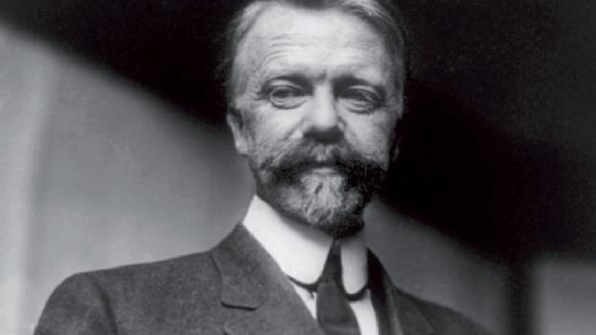

Biografia
Nascido em Constantinopla, atual Istambul, em 29 de julho de 1841, Henri Fayol foi um teórico francês da administração. Filho de pais franceses, estudou engenharia de minas na École Nationale Supérieure des Mines de Saint-Étienne, onde se formou em 1860. Fayol trabalhou em várias empresas, incluindo a Companhia de Comentários de Commentry-Fourchambault e a Companhia de Ferro e Aço de Companhia de Comentários de Commentry-Fourchambault. Em 1916, publicou seu livro "Administration Industrielle et Générale", que se tornou um dos marcos da teoria da administração.
Principais contribuições na administração e no mundo do trabalho
Identificação das funções básicas da administração: planejamento, organização, direção, coordenação e controle;
Ênfase na importância da gestão empresarial;
Desenvolvimento da teoria clássica da administração, que enfatizava a estrutura e o funcionamento das organizações;
Introdução da ideia de "unidade de comando", segundo a qual um subordinado deveria receber ordens apenas de um superior;
Desenvolvimento do conceito de "hierarquia", que se refere à estruturação da organização em diferentes níveis de autoridade e responsabilidade;
Definição de "especialização" como a concentração de esforços em tarefas específicas para alcançar maior eficiência;
Ênfase na importância da comunicação para o bom funcionamento da organização;
Introdução do conceito de "administração científica", que propunha a aplicação dos métodos científicos para aumentar a eficiência e a produtividade na produção industrial.
Relação das contribuições de Fayol com a atualidade no mercado de trabalho
As contribuições de Fayol continuam relevantes e são aplicadas até hoje em muitas empresas ao redor do mundo. A ênfase na gestão empresarial, a importância da comunicação, a especialização e a aplicação de métodos científicos são conceitos que ainda são valorizados no mercado de trabalho atual. A ideia de hierarquia e a unidade de comando, por exemplo, são fundamentais para garantir a eficiência e a coordenação de equipes em empresas de grande porte.